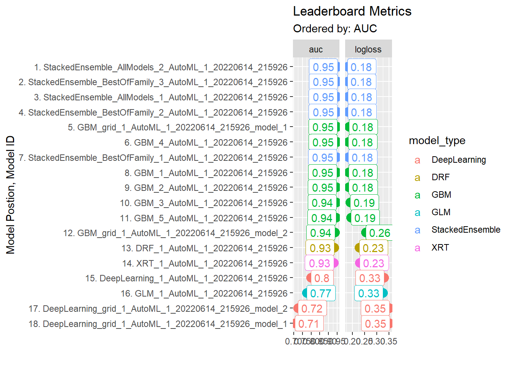
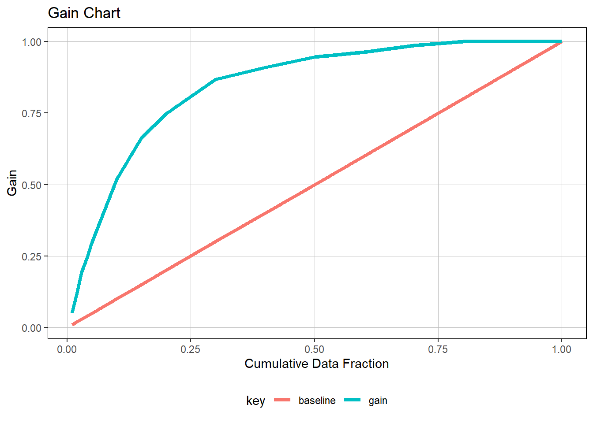
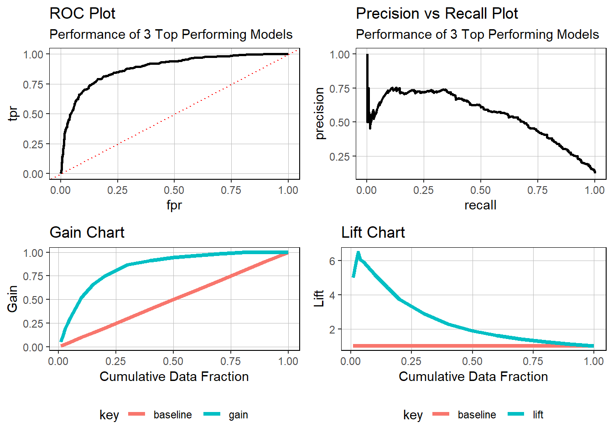

04 Performance Measures
2024-06
library(tidyverse)
library(GGally)
library(h2o)
library(recipes)
library(rsample)product_backorders_tbl <- read_csv("./04_perf_meas_files/product_backorders.txt")
glimpse(product_backorders_tbl)## Rows: 19,053
## Columns: 23
## $ sku <dbl> 1113121, 1113268, 1113874, 1114222, 1114823, 1115453…
## $ national_inv <dbl> 0, 0, 20, 0, 0, 55, -34, 4, 2, -7, 1, 2, 0, 0, 0, 0,…
## $ lead_time <dbl> 8, 8, 2, 8, 12, 8, 8, 9, 8, 8, 8, 8, 12, 2, 12, 4, 2…
## $ in_transit_qty <dbl> 1, 0, 0, 0, 0, 0, 0, 0, 0, 0, 0, 0, 0, 0, 0, 0, 1, 0…
## $ forecast_3_month <dbl> 6, 2, 45, 9, 31, 216, 120, 43, 4, 56, 2, 5, 5, 54, 4…
## $ forecast_6_month <dbl> 6, 3, 99, 14, 31, 360, 240, 67, 6, 96, 4, 9, 6, 72, …
## $ forecast_9_month <dbl> 6, 4, 153, 21, 31, 492, 240, 115, 9, 112, 6, 13, 9, …
## $ sales_1_month <dbl> 0, 1, 16, 5, 7, 30, 83, 5, 1, 13, 0, 1, 0, 0, 1, 0, …
## $ sales_3_month <dbl> 4, 2, 42, 17, 15, 108, 122, 22, 5, 30, 2, 5, 4, 0, 3…
## $ sales_6_month <dbl> 9, 3, 80, 36, 33, 275, 144, 40, 6, 56, 3, 8, 5, 0, 4…
## $ sales_9_month <dbl> 12, 3, 111, 43, 47, 340, 165, 58, 9, 76, 4, 11, 6, 0…
## $ min_bank <dbl> 0, 0, 10, 0, 2, 51, 33, 4, 2, 0, 0, 0, 3, 4, 0, 0, 0…
## $ potential_issue <chr> "No", "No", "No", "No", "No", "No", "No", "No", "No"…
## $ pieces_past_due <dbl> 1, 0, 0, 0, 3, 0, 0, 0, 0, 0, 0, 0, 0, 0, 0, 0, 0, 0…
## $ perf_6_month_avg <dbl> 0.90, 0.96, 0.81, 0.96, 0.98, 0.00, 1.00, 0.69, 1.00…
## $ perf_12_month_avg <dbl> 0.89, 0.97, 0.88, 0.98, 0.98, 0.00, 0.97, 0.68, 0.95…
## $ local_bo_qty <dbl> 0, 0, 0, 0, 0, 0, 34, 0, 0, 7, 0, 0, 0, 0, 0, 0, 0, …
## $ deck_risk <chr> "No", "No", "No", "No", "No", "No", "No", "No", "No"…
## $ oe_constraint <chr> "No", "No", "No", "No", "No", "No", "No", "No", "No"…
## $ ppap_risk <chr> "No", "No", "No", "No", "No", "Yes", "No", "No", "No…
## $ stop_auto_buy <chr> "Yes", "Yes", "Yes", "Yes", "Yes", "Yes", "Yes", "Ye…
## $ rev_stop <chr> "No", "No", "No", "No", "No", "No", "No", "No", "No"…
## $ went_on_backorder <chr> "Yes", "Yes", "Yes", "Yes", "Yes", "Yes", "Yes", "Ye…recipe_obj <- recipe(went_on_backorder ~ ., data = product_backorders_tbl) %>%
step_zv(all_predictors()) %>%
step_mutate_at(potential_issue, deck_risk, oe_constraint, ppap_risk, stop_auto_buy, rev_stop, fn = as.factor) %>%
prep()set.seed(1234)
split_obj <- initial_split(product_backorders_tbl, prop = 0.85)
train_readable_tbl <- training(split_obj)
test_readable_tbl <- testing(split_obj)
train_tbl <- bake(recipe_obj, new_data = train_readable_tbl)
test_tbl <- bake(recipe_obj, new_data = test_readable_tbl)h2o.init()##
## H2O is not running yet, starting it now...
##
## Note: In case of errors look at the following log files:
## C:\Users\BALINT~1\AppData\Local\Temp\RtmpcZ8bDn\file167461f870b9/h2o_Balint_Programming_started_from_r.out
## C:\Users\BALINT~1\AppData\Local\Temp\RtmpcZ8bDn\file167472ac54c7/h2o_Balint_Programming_started_from_r.err
##
##
## Starting H2O JVM and connecting: Connection successful!
##
## R is connected to the H2O cluster:
## H2O cluster uptime: 5 seconds 482 milliseconds
## H2O cluster timezone: Europe/Berlin
## H2O data parsing timezone: UTC
## H2O cluster version: 3.36.1.2
## H2O cluster version age: 19 days
## H2O cluster name: H2O_started_from_R_Balint_Programming_pgz902
## H2O cluster total nodes: 1
## H2O cluster total memory: 1.74 GB
## H2O cluster total cores: 4
## H2O cluster allowed cores: 4
## H2O cluster healthy: TRUE
## H2O Connection ip: localhost
## H2O Connection port: 54321
## H2O Connection proxy: NA
## H2O Internal Security: FALSE
## R Version: R version 4.2.0 (2022-04-22 ucrt)split_h2o <- h2o.splitFrame(as.h2o(train_tbl), ratios = c(0.85), seed = 1234)## | | | 0% | |======================================================================| 100%train_h2o <- split_h2o[[1]]
valid_h2o <- split_h2o[[2]]
test_h2o <- as.h2o(test_tbl)## | | | 0% | |======================================================================| 100%y <- "went_on_backorder"
x <- setdiff(names(train_h2o), y)automl_models_h2o <- h2o.automl(
x = x,
y = y,
training_frame = train_h2o,
validation_frame = valid_h2o,
leaderboard_frame = test_h2o,
max_runtime_secs = 120,
nfolds = 5
)## | | | 0% | |= | 1%
## 21:59:26.599: User specified a validation frame with cross-validation still enabled. Please note that the models will still be validated using cross-validation only, the validation frame will be used to provide purely informative validation metrics on the trained models.
## 21:59:26.623: AutoML: XGBoost is not available; skipping it. | |=== | 5% | |===== | 7% | |============ | 17% | |============== | 19% | |=============== | 22% | |================== | 26% | |====================== | 32% | |======================== | 34% | |=========================== | 39% | |============================= | 41% | |================================= | 47% | |================================== | 49% | |====================================== | 55% | |======================================== | 57% | |========================================== | 61% | |============================================= | 64% | |================================================ | 69% | |================================================== | 71% | |==================================================== | 75% | |====================================================== | 77% | |========================================================= | 81% | |=========================================================== | 84% | |============================================================= | 87% | |============================================================== | 89% | |================================================================= | 93% | |=================================================================== | 96% | |===================================================================== | 99% | |======================================================================| 100%typeof(automl_models_h2o)## [1] "S4"slotNames(automl_models_h2o)## [1] "project_name" "leader" "leaderboard" "event_log"
## [5] "modeling_steps" "training_info"automl_models_h2o@leaderboard## model_id auc logloss
## 1 StackedEnsemble_AllModels_2_AutoML_1_20220614_215926 0.9509276 0.1788098
## 2 StackedEnsemble_BestOfFamily_3_AutoML_1_20220614_215926 0.9508948 0.1786317
## 3 StackedEnsemble_AllModels_1_AutoML_1_20220614_215926 0.9501320 0.1803477
## 4 StackedEnsemble_BestOfFamily_2_AutoML_1_20220614_215926 0.9500676 0.1803496
## 5 GBM_grid_1_AutoML_1_20220614_215926_model_1 0.9493726 0.1848538
## 6 GBM_4_AutoML_1_20220614_215926 0.9488151 0.1831615
## aucpr mean_per_class_error rmse mse
## 1 0.7384318 0.1611463 0.2323044 0.05396531
## 2 0.7439417 0.1603286 0.2326289 0.05411621
## 3 0.7317708 0.1546437 0.2330732 0.05432312
## 4 0.7380617 0.1609467 0.2334089 0.05447972
## 5 0.7494622 0.1577146 0.2340042 0.05475796
## 6 0.7320873 0.1729154 0.2355225 0.05547085
##
## [18 rows x 7 columns]automl_models_h2o@leader## Model Details:
## ==============
##
## H2OBinomialModel: stackedensemble
## Model ID: StackedEnsemble_AllModels_2_AutoML_1_20220614_215926
## Number of Base Models: 9
##
## Base Models (count by algorithm type):
##
## deeplearning drf gbm glm
## 1 2 5 1
##
## Metalearner:
##
## Metalearner algorithm: glm
## Metalearner cross-validation fold assignment:
## Fold assignment scheme: AUTO
## Number of folds: 5
## Fold column: NULL
## Metalearner hyperparameters:
##
##
## H2OBinomialMetrics: stackedensemble
## ** Reported on training data. **
##
## MSE: 0.02674003
## RMSE: 0.1635238
## LogLoss: 0.09993219
## Mean Per-Class Error: 0.09005253
## AUC: 0.9884571
## AUCPR: 0.9377605
## Gini: 0.9769143
##
## Confusion Matrix (vertical: actual; across: predicted) for F1-optimal threshold:
## No Yes Error Rate
## No 8672 133 0.015105 =133/8805
## Yes 198 1002 0.165000 =198/1200
## Totals 8870 1135 0.033083 =331/10005
##
## Maximum Metrics: Maximum metrics at their respective thresholds
## metric threshold value idx
## 1 max f1 0.451536 0.858244 165
## 2 max f2 0.219742 0.885074 237
## 3 max f0point5 0.550852 0.892721 141
## 4 max accuracy 0.493607 0.967416 155
## 5 max precision 0.992869 1.000000 0
## 6 max recall 0.023530 1.000000 348
## 7 max specificity 0.992869 1.000000 0
## 8 max absolute_mcc 0.493607 0.840456 155
## 9 max min_per_class_accuracy 0.207481 0.945031 242
## 10 max mean_per_class_accuracy 0.204675 0.945451 243
## 11 max tns 0.992869 8805.000000 0
## 12 max fns 0.992869 1196.000000 0
## 13 max fps 0.000595 8805.000000 399
## 14 max tps 0.023530 1200.000000 348
## 15 max tnr 0.992869 1.000000 0
## 16 max fnr 0.992869 0.996667 0
## 17 max fpr 0.000595 1.000000 399
## 18 max tpr 0.023530 1.000000 348
##
## Gains/Lift Table: Extract with `h2o.gainsLift(<model>, <data>)` or `h2o.gainsLift(<model>, valid=<T/F>, xval=<T/F>)`
## H2OBinomialMetrics: stackedensemble
## ** Reported on validation data. **
##
## MSE: 0.04546282
## RMSE: 0.2132201
## LogLoss: 0.1543327
## Mean Per-Class Error: 0.1330024
## AUC: 0.9578545
## AUCPR: 0.7577746
## Gini: 0.915709
##
## Confusion Matrix (vertical: actual; across: predicted) for F1-optimal threshold:
## No Yes Error Rate
## No 2023 106 0.049789 =106/2129
## Yes 56 203 0.216216 =56/259
## Totals 2079 309 0.067839 =162/2388
##
## Maximum Metrics: Maximum metrics at their respective thresholds
## metric threshold value idx
## 1 max f1 0.343608 0.714789 182
## 2 max f2 0.168040 0.787858 238
## 3 max f0point5 0.677125 0.749736 91
## 4 max accuracy 0.590416 0.939280 114
## 5 max precision 0.980495 1.000000 0
## 6 max recall 0.011690 1.000000 365
## 7 max specificity 0.980495 1.000000 0
## 8 max absolute_mcc 0.343608 0.680024 182
## 9 max min_per_class_accuracy 0.159001 0.899614 244
## 10 max mean_per_class_accuracy 0.159001 0.900018 244
## 11 max tns 0.980495 2129.000000 0
## 12 max fns 0.980495 258.000000 0
## 13 max fps 0.000373 2129.000000 399
## 14 max tps 0.011690 259.000000 365
## 15 max tnr 0.980495 1.000000 0
## 16 max fnr 0.980495 0.996139 0
## 17 max fpr 0.000373 1.000000 399
## 18 max tpr 0.011690 1.000000 365
##
## Gains/Lift Table: Extract with `h2o.gainsLift(<model>, <data>)` or `h2o.gainsLift(<model>, valid=<T/F>, xval=<T/F>)`
## H2OBinomialMetrics: stackedensemble
## ** Reported on cross-validation data. **
## ** 5-fold cross-validation on training data (Metrics computed for combined holdout predictions) **
##
## MSE: 0.05084483
## RMSE: 0.225488
## LogLoss: 0.1714745
## Mean Per-Class Error: 0.1487757
## AUC: 0.9511881
## AUCPR: 0.7491558
## Gini: 0.9023762
##
## Confusion Matrix (vertical: actual; across: predicted) for F1-optimal threshold:
## No Yes Error Rate
## No 11520 633 0.052086 =633/12153
## Yes 406 1248 0.245466 =406/1654
## Totals 11926 1881 0.075252 =1039/13807
##
## Maximum Metrics: Maximum metrics at their respective thresholds
## metric threshold value idx
## 1 max f1 0.313883 0.706082 215
## 2 max f2 0.130874 0.776351 285
## 3 max f0point5 0.587436 0.736115 134
## 4 max accuracy 0.526625 0.931846 152
## 5 max precision 0.995507 1.000000 0
## 6 max recall 0.000773 1.000000 398
## 7 max specificity 0.995507 1.000000 0
## 8 max absolute_mcc 0.291764 0.665246 223
## 9 max min_per_class_accuracy 0.117338 0.885127 292
## 10 max mean_per_class_accuracy 0.083829 0.886213 310
## 11 max tns 0.995507 12153.000000 0
## 12 max fns 0.995507 1653.000000 0
## 13 max fps 0.000318 12153.000000 399
## 14 max tps 0.000773 1654.000000 398
## 15 max tnr 0.995507 1.000000 0
## 16 max fnr 0.995507 0.999395 0
## 17 max fpr 0.000318 1.000000 399
## 18 max tpr 0.000773 1.000000 398
##
## Gains/Lift Table: Extract with `h2o.gainsLift(<model>, <data>)` or `h2o.gainsLift(<model>, valid=<T/F>, xval=<T/F>)`
## Cross-Validation Metrics Summary:
## mean sd cv_1_valid cv_2_valid cv_3_valid cv_4_valid
## accuracy 0.927805 0.006852 0.937177 0.920450 0.932543 0.923863
## auc 0.951547 0.004859 0.956713 0.946509 0.950761 0.947320
## err 0.072195 0.006852 0.062823 0.079550 0.067457 0.076137
## err_count 199.600000 22.142720 170.000000 219.000000 182.000000 216.000000
## f0point5 0.693614 0.019767 0.695322 0.664226 0.719973 0.694864
## cv_5_valid
## accuracy 0.924991
## auc 0.956434
## err 0.075009
## err_count 211.000000
## f0point5 0.693685
##
## ---
## mean sd cv_1_valid cv_2_valid cv_3_valid
## precision 0.681281 0.031466 0.679012 0.643038 0.730640
## r2 0.518183 0.009080 0.516715 0.504901 0.530103
## recall 0.752578 0.041451 0.769231 0.765060 0.680251
## residual_deviance 946.124600 75.496220 839.485200 980.036900 903.178300
## rmse 0.225125 0.007490 0.213730 0.229143 0.221336
## specificity 0.951542 0.010050 0.957025 0.941760 0.966372
## cv_4_valid cv_5_valid
## precision 0.679803 0.673913
## r2 0.517996 0.521204
## recall 0.762431 0.785915
## residual_deviance 1033.475600 974.446800
## rmse 0.231637 0.229779
## specificity 0.947475 0.945077typeof(automl_models_h2o@leader)## [1] "S4"predictions <- h2o.predict(automl_models_h2o@leader, newdata = as.h2o(test_tbl))## | | | 0% | |======================================================================| 100%
## | | | 0% | |======================================================================| 100%predictions_tbl <-
predictions %>%
as_tibble()
#h2o.saveModel(automl_models_h2o@leader, path = "./04_perf_meas_files/")predictions_tbl %>%
glimpse()## Rows: 2,858
## Columns: 3
## $ predict <fct> Yes, Yes, Yes, Yes, Yes, Yes, No, No, Yes, Yes, Yes, Yes, No, …
## $ No <dbl> 0.39287820, 0.58269371, 0.19279318, 0.24021975, 0.08202530, 0.…
## $ Yes <dbl> 0.60712180, 0.41730629, 0.80720682, 0.75978025, 0.91797470, 0.…automl_models_h2o@leaderboard %>%
as_tibble() %>%
select(-c(mean_per_class_error, rmse, mse))plot_h2o_leaderboard <- function(h2o_leaderboard, order_by = c("auc", "logloss"),
n_max = 20, size = 4, include_lbl = TRUE) {
# Setup inputs
# adjust input so that all formats are working
order_by <- tolower(order_by[[1]])
leaderboard_tbl <- h2o_leaderboard %>%
as_tibble() %>%
select(-c(aucpr, mean_per_class_error, rmse, mse)) %>%
mutate(model_type = str_extract(model_id, "[^_]+")) %>%
rownames_to_column(var = "rowname") %>%
mutate(model_id = paste0(rowname, ". ", model_id) %>% as.factor())
# Transformation
if (order_by == "auc") {
data_transformed_tbl <- leaderboard_tbl %>%
slice(1:n_max) %>%
mutate(
model_id = as_factor(model_id) %>% reorder(auc),
model_type = as.factor(model_type)
) %>%
pivot_longer(cols = -c(model_id, model_type, rowname),
names_to = "key",
values_to = "value",
names_transform = list(key = forcats::fct_inorder)
)
} else if (order_by == "logloss") {
data_transformed_tbl <- leaderboard_tbl %>%
slice(1:n_max) %>%
mutate(
model_id = as_factor(model_id) %>% reorder(logloss) %>% fct_rev(),
model_type = as.factor(model_type)
) %>%
pivot_longer(cols = -c(model_id, model_type, rowname),
names_to = "key",
values_to = "value",
names_transform = list(key = forcats::fct_inorder)
)
} else {
# If nothing is supplied
stop(paste0("order_by = '", order_by, "' is not a permitted option."))
}
# Visualization
g <- data_transformed_tbl %>%
ggplot(aes(value, model_id, color = model_type)) +
geom_point(size = size) +
facet_wrap(~ key, scales = "free_x") +
labs(title = "Leaderboard Metrics",
subtitle = paste0("Ordered by: ", toupper(order_by)),
y = "Model Postion, Model ID", x = "")
if (include_lbl) g <- g + geom_label(aes(label = round(value, 2),
hjust = "inward"))
return(g)
}automl_models_h2o@leaderboard %>% plot_h2o_leaderboard() For some reason I can not build the page because the program have some problem with an h2o function. So I saved the results and loaded them. The used code is commented out.
#h2o.init()
#deeplearning_h2o <-
# h2o.loadModel("./04_Modeling/h20_models/DeepLearning_1_AutoML_3_20220614_234925")
#deeplearning_h2o@allparameters
# Deeplearning_grid_01 <- h2o.grid(
#
# # See help page for available algos
# algorithm = "deeplearning",
#
# # I just use the same as the object
# grid_id = "Deaplearning_grid_01",
#
# # The following is for ?h2o.deeplearning()
# # predictor and response variables
# x = x,
# y = y,
#
# # training and validation frame and crossfold validation
# training_frame = train_h2o,
# validation_frame = valid_h2o,
# nfolds = 5,
#
# # Hyperparamters: Use deeplearning_h2o@allparameters to see all
# hyper_params = list(
# # Use some combinations (the first one was the original)
# hidden = list(c(10, 10, 10), c(50, 20, 10), c(20, 20, 20)),
# epochs = c(10, 50, 100)
# )
# )# <- h2o.getModel("Deaplearning_grid_01_model_3")
#Deeplearning_grid_01_model_3 %>%h2o.saveModel(path = "04_Modeling/Deaplearning_grid_01_model_3")
#Deeplearning_grid_01_model_3 <- h2o.loadModel("04_Modeling/Deaplearning_grid_01_model_3/Deaplearning_grid_01_model_3")
# performance_h2o <- h2o.performance(Deeplearning_grid_01_model_3, newdata = as.h2o(test_tbl))
#
# performance_tbl <- performance_h2o %>%
# h2o.metric() %>%
# as.tibble()
#
# theme_new <- theme(
# legend.position = "bottom",
# panel.background = element_rect(fill = "transparent"),
# panel.border = element_rect(color = "black", fill = NA, size = 0.5),
# panel.grid.major = element_line(color = "grey", size = 0.333)
# )
# saveRDS(performance_tbl, file = "performance_tbl.rds")
performance_tbl <- readRDS("performance_tbl.rds")performance_tbl %>%
filter(f1 == max(f1))performance_tbl %>%
ggplot(aes(x = threshold)) +
geom_line(aes(y = precision), color = "blue", size = 1) +
geom_line(aes(y = recall), color = "red", size = 1) +
# Insert line where precision and recall are harmonically optimized
geom_vline(xintercept = h2o.find_threshold_by_max_metric(performance_h2o, "f1")) +
labs(title = "Precision vs Recall", y = "value") +
theme_new
p1 <- performance_tbl %>%
ggplot(aes(fpr, tpr)) +
geom_line(size = 1) +
# just for demonstration purposes
geom_abline(color = "red", linetype = "dotted") +
theme_new +
theme(
legend.direction = "vertical",
) +
labs(
title = "ROC Plot"
#subtitle = "Performance of 3 Top Performing Models"
)
p1
p2 <- performance_tbl %>%
ggplot(aes(recall, precision)) +
geom_line(size = 1) +
theme_new +
theme(
legend.direction = "vertical",
) +
labs(
title = "Precision vs Recall Plot"
#subtitle = "Performance of 3 Top Performing Models"
)
p2
ranked_predictions_tbl <- predictions_tbl %>%
bind_cols(test_tbl) %>%
select(predict:Yes, went_on_backorder) %>%
# Sorting from highest to lowest class probability
arrange(desc(Yes))
calculated_gain_lift_tbl <- ranked_predictions_tbl %>%
mutate(ntile = ntile(Yes, n = 10)) %>%
group_by(ntile) %>%
summarise(
cases = n(),
responses = sum(went_on_backorder == "Yes")
) %>%
arrange(desc(ntile)) %>%
# Add group numbers (opposite of ntile)
mutate(group = row_number()) %>%
select(group, cases, responses) %>%
# Calculations
mutate(
cumulative_responses = cumsum(responses),
pct_responses = responses / sum(responses),
gain = cumsum(pct_responses),
cumulative_pct_cases = cumsum(cases) / sum(cases),
lift = gain / cumulative_pct_cases,
gain_baseline = cumulative_pct_cases,
lift_baseline = gain_baseline / cumulative_pct_cases
)gain_lift_tbl <- performance_h2o %>%
h2o.gainsLift() %>%
as.tibble()
gain_transformed_tbl <- gain_lift_tbl %>%
select(group, cumulative_data_fraction, cumulative_capture_rate, cumulative_lift) %>%
select(-contains("lift")) %>%
mutate(baseline = cumulative_data_fraction) %>%
rename(gain = cumulative_capture_rate) %>%
# prepare the data for the plotting (for the color and group aesthetics)
pivot_longer(cols = c(gain, baseline), values_to = "value", names_to = "key")
p3 <- gain_transformed_tbl %>%
ggplot(aes(x = cumulative_data_fraction, y = value, color = key)) +
geom_line(size = 1.5) +
labs(
title = "Gain Chart",
x = "Cumulative Data Fraction",
y = "Gain"
) +
theme_new
p3
lift_transformed_tbl <- gain_lift_tbl %>%
select(group, cumulative_data_fraction, cumulative_capture_rate, cumulative_lift) %>%
select(-contains("capture")) %>%
mutate(baseline = 1) %>%
rename(lift = cumulative_lift) %>%
pivot_longer(cols = c(lift, baseline), values_to = "value", names_to = "key")
p4 <- lift_transformed_tbl %>%
ggplot(aes(x = cumulative_data_fraction, y = value, color = key)) +
geom_line(size = 1.5) +
labs(
title = "Lift Chart",
x = "Cumulative Data Fraction",
y = "Lift"
) +
theme_new
p4
library(cowplot)
library(glue)# Combine using cowplot
# cowplot::get_legend extracts a legend from a ggplot object
p_legend <- get_legend(p1)
# Remove legend from p1
p1 <- p1 + theme(legend.position = "none")
# cowplot::plt_grid() combines multiple ggplots into a single cowplot object
p <- cowplot::plot_grid(p1, p2, p3, p4, ncol = 2)
p